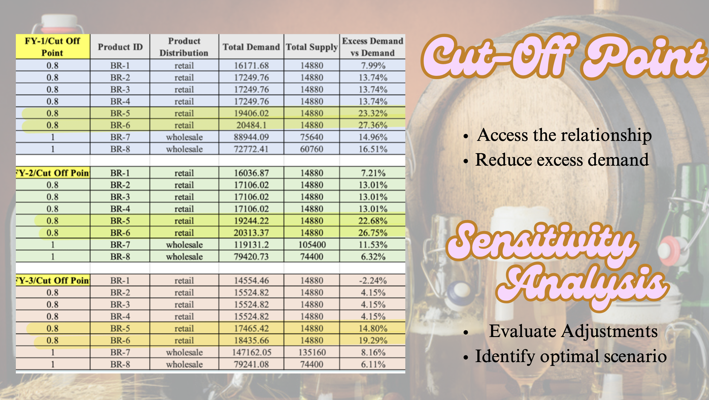

Projects Showcase
📊Web Analytics and Development (AD688 Project)
Course: Web Analytics for Business (AD688), Boston University
Type: Personal Project
🔍 Project Objective Developed websites using GitHub, Visual Studio Code, and Quarto to analyze datasets and present data-driven insights interactively on the web.
📊 What I Did
-Built and deployed websites leveraging GitHub Pages for web hosting. -Used Visual Studio Code and Quarto to structure and publish web-based analytics reports. -Performed comprehensive data analysis with Python and SQL to interpret datasets effectively. -Clearly presented data findings and interpretations through interactive and accessible web pages.
🛠️ Tools & Techniques Web Development: GitHub Pages, Visual Studio Code, Quarto Programming: Python, SQL Data visualization and interactive web reporting
🔗 View my Work - GitHub Portfolio
🏢 iREOPS: A Data-Driven Approach to Real Estate Optimization (AD571 Final Assignment)
Course: Business Analytics Foundation (AD571), Boston University
Type: Personal Project (Final Assignment)
🔍 Project Objective
Built iREOPS, an optimization model to help real estate companies predict market trends, strategically allocate resources, and make data-driven operational decisions.
📊 What I Did
- Performed detailed Data Exploration and Descriptive Analytics to uncover market insights.
- Developed robust predictive models (Predictive Analytics) to forecast future sales and identify profitable investment areas.
- Implemented Prescriptive Analytics to recommend actionable strategies for resource allocation, highlighting optimal investment locations.
🛠️ Tools & Techniques
- Data Exploration tools (Python, Excel)
- Predictive modeling (Regression Analysis, Forecasting Models)
- Prescriptive optimization techniques
💡 Impact & Results
- Enhanced investment decision-making capabilities through data-driven insights.
- Improved accuracy of resource allocation strategies, identifying high-potential real estate investments.
📸 Project Visual
Model Process of iREOPS
🍺 Brewery Tavern Expansion Analysis (AD715 Team Project)
Course: Quantitative and Qualitative Decision Making (AD715), Boston University
Role: Financial Analyst and Consultant
🔍 Project Objective
Acted as a consulting team advising investors on whether to expand a tavern by adding their own microbrewery system. The goal was to determine the project’s financial feasibility and long-term profitability.
📊 What I Did
- Conducted comprehensive Financial Analysis, assessing investment returns using simulation modeling.
- Performed Sensitivity Analysis to understand how changes in demand and cut-off points impact profitability.
- Applied PESTEL analysis to evaluate external market conditions influencing the investment decision.
- Used a cut-off analysis approach to identify optimal product demand and supply levels, guiding strategic inventory decisions.
🛠️ Tools Used
- Excel simulation modeling
- Financial forecasting techniques
- Sensitivity and scenario analysis
- PESTEL framework analysis
📈 Key Insights
- Identified the critical product distribution (retail and wholesale) contributing most to profitability.
- Demonstrated through simulation that optimal cut-off points significantly enhance profit margins, particularly highlighted by products BR-5 and BR-6.
- Recommended strategic adjustments in inventory and distribution based on quantitative findings.
📸 Project Visual
